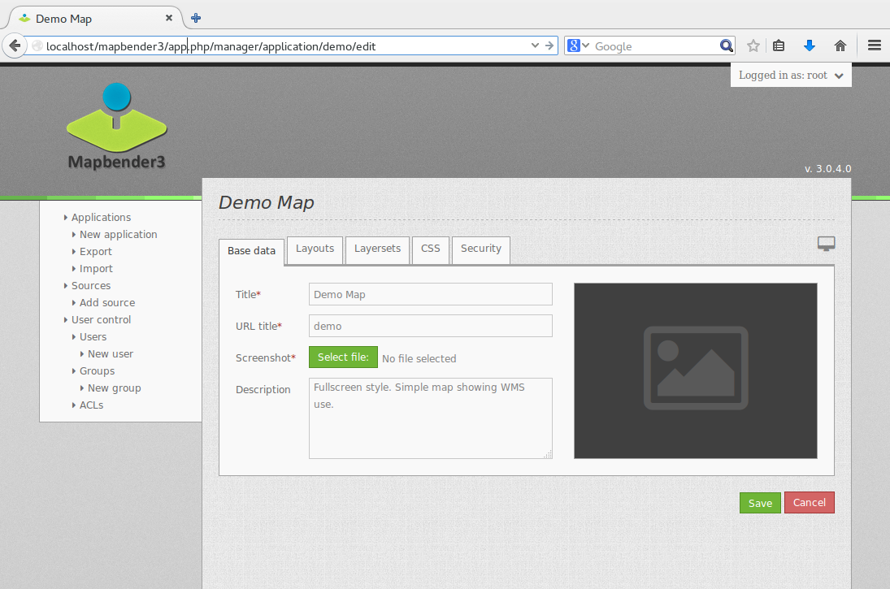
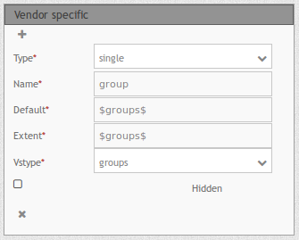
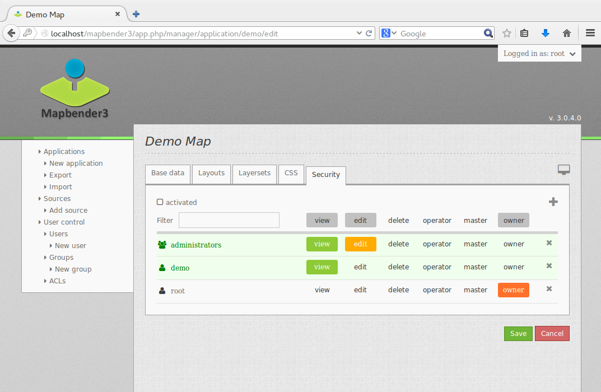

Mapbender3 Quickstart¶
Mapbender ist ein web-basiertes Geoportal Framework zum Veröffentlichen, Registrieren, Anzeigen, Navigieren und Überwachen von Diensten, mit der Möglichkeit Dienste gesichert anzubieten.
Administrationsoberflächen ermöglichen es Administratoren Karten- und Datendienste zu verwalten und zu kategorisieren. Über die Administration können einzelnen Benutzern und Gruppen Zugriffe gewährt werden.
Mapbender3 ist die nächste Version in der Mapbender Serie. Es wurde unter Verwendung moderner Webtechnologien komplett neu geschrieben. Die Grundlage bildet Symfony2, das erfolgreiche PHP Web Application Framework. Auf der Clientseite finden Sie OpenLayers und jQuery (UI) verbunden über MapQuery.
Mit dieser neuen Code-Grundlage wird die Mapbender Idee eines Geoportal Frameworks fortgesetzt.
- Anwendungen können direkt im Browser erstellt, konfiguriert und gestylt werden.
- Dienste wie WMS können in einem Service Repository verwaltet und mit Anwendungen verbunden werden.
- Das Rechtemanagement ist sowohl für einzelne Benutzer als auch Gruppen einfach zu verwalten, egal ob sie in einer Datenbank oder über LDAP gespeichert werden.
- Der Administrator braucht keine Zeile Code zu schreiben, da die Konfiguration über die webbasierte Administrationsoberfläche erfolgt.
- Suchen (SQL oder Solr) können konfiguriert werden.
- Anwendungen zur Digitalisierung können aufgebaut werden
- Ein Mobiles Template kann für das Erstellen von Anwendung für Smartphones und Tablets verwendet werden
Sie brauchen nichts weiter als einen Standard Webbrowser für diesen Schnellstart (Quickstart).
Dieser Quickstart beschreibt, wie Sie:
- Mapbender starten
- eine Anwendung erstellen
- einen Web Map Service (OGC WMS) laden
- WMS konfigurieren
- eine individuelle Anwendung erstellen
- Benutzer und Gruppen anlegen und Anwendungen zuweisen
Eine Mapbender Anwendung kann wie folgt aussehen:

Installation¶
Hinweise zur Installation von Mapbender3 finden Sie unter http://doc.mapbender3.org/en/book/installation.html.
Starten Sie Mapbender¶
- Wählen Sie
Mapbenderaus dem Startmenü oder besuchen Sie http://localhost/mapbender3/app.php - Die Anwendung braucht eine kurze Zeit, um zu starten.
Falls Sie Schwierigkeiten haben, Mapbender zu starten, überprüfen Sie ob der Apache Web Server und die PostgreSQL Datenbank laufen.

Starten Sie Mapbender im Entwicklungsmodus über app_dev.php¶
Symfony bietet einen Entwicklungsmodus mit einer Reihe von Informationen über die Anwendung an (Logging, Fehlermeldungen, Datenbankabfragen, Speicherverbrauch, Zeit und mehr). Dieser Modus ist nur über localhost verfügbar.
- Start des Entwicklungsmodus: http://localhost/mapbender3/app_dev.php
- Schauen Sie sich an, welche Information im Entwicklungsmodus angezeigt werden.
Die Willkommensseite¶
- Die Willkommensseite listet die öffentlichen Anwendungen auf, die von allen Benutzern aufgerufen werden können. Die Anwendungen werden mit Vorschaubild, Titel und Beschreibung aufgelistet.
- Sie können die Anwendung per Klick auf den Titel, das Vorschaubild oder den Startbutton aufrufen.
- Bevor Sie Mapbender administrieren können, müssen Sie sich anmelden.
- Klicken Sie auf den Link Anmelden oben rechts, um die Loginseite aufzurufen.
- Sie können sich mit dem Benutzer anmelden, der während der Installation erzeugt wurde. Er kann
rootheißen mit dem Kennwortroot(Dies ist der Standardbenutzer/Kennwort nach der Installation von Mapbender auf der OSGeo-Live. Bitte ändern Sie das Kennwort, wenn Sie eine Produktivumgebung betreiben. Löschen Sie den Benutzerrootnicht.).
Nach erfolgreicher Anmeldung werden Sie zur Mapbender Administration weiter geleitet.
Anwendungsübersicht¶
Nach der Anmeldung werden Sie zur Anwendungsübersicht (Anwendungen/ Applications) mit einer Liste der für Sie freigegebenen Anwendungen weiter geleitet.
Die Anwendungsübersicht bietet folgende Funktionen:
- Titel und Beschreibung
- Vorschaubild zur Anwendung (sofern bereitgestellt)
- Link zur Anwendung
- Button, um die Anwendung zu kopieren
- Button, um die Anwendung zu bearbeiten
Button zum Veröffentlichen der Anwendung
Button, um die Anwendung zu löschen
- mit dem Filtertextfeld kann nach Anwendungen gesucht werden

Erstellen Sie eine eigene Anwendung¶
Erstellen Sie eine neue Anwendung, indem Sie einen Titel, eine Beschreibung sowie einen URL-Titel eingeben. Anschließend können Sie die Anwendung bearbeiten und Elemente, Themen, Stil (CSS-Editor) und Sicherheitseinstellungen zu verwalten.
- Wählen Sie
Anwendungen --> Neue Anwendung (Applications --> New Application) - Geben Sie einen Titel und eine Beschreibung der Anwendung ein
- Geben Sie einen URL-Titel an, der in der URL benutzt wird, um die Anwendung zu starten. Er kann identisch zum Titel sein und sollte keine Leer- und Sonderzeichen enthalten.
- Laden Sie eine Bilddatei und definieren so ein Vorschaubild für die Anwendungsübersicht.
- Wählen Sie eine Layoutvorlage für die Anwendung. Die Vorlage bestimmt den Aufbau der Anwendung. Mapbender3 stellt Ihnen einige Vorlagen (Templates) zur Verfügung (Fullscreen, Classic,...). Sie können aber auch eigene Vorlagen anlegen.
- Betätigen Sie die Schaltfläche Speichern (Create), um die Anwendung zu erzeugen.
- Über den
Bearbeiten-Buttonneben der Anwendung können Sie nun weitere Bearbeitungen durchführen.
Ihre Anwendung wurde erstellt. Jetzt brauchen Sie Elemente (z.B. Kartenelement, Navigation, Legende) und Kartendienste, um die Anwendung mit Leben zu füllen.

Tip
Beachten Sie, dass derzeit die Layout-, Icon- und Farbanpassungen im online über den CSS_Editor oder in css- und twig-Dateien erfolgen. Lesen Sie dazu die Dokumentation unter http://doc.mapbender3.org/en/book/templates.html
Kopieren und Umbenennen einer Anwendung¶
Sie können eine neue Anwendung auch durch Kopieren einer vorhandenen erzeugen. Jede Anwendung, auf die Sie schreibend zugreifen können, verfügt über den Button Anwendung duplizieren . Beim Kopieren wird die Anwendung mitsamt der Dienste kopiert. Die kopierte Anwendung erhält einen abgeleiteten Namen, den Sie im nächsten Schritt anpassen können.
Löschen einer Anwendung¶
Sie können eine Anwendung aus der Liste Anwendungen über den -Button löschen. Es wird lediglich die Anwendung gelöscht. Die Dienste sind weiterhin im Dienste-Repository vorhanden.
Exportieren und Importieren von Anwendungen und Daten¶
Sie können eine Anwendung als JSON oder YAML über ``Anwendungen –> Exportieren (Applications –> Export)``exportieren. Für den Export können ein oder mehrere Anwendungen ausgewählt werden. Die Datenquellen können ebenfalls beim Export ausgegeben werden.
Die Export-Datei beinhaltet alle Definitionen, die zum Aufbau der Anwendung (Datenquellen) erforderlich sind. Die Export-Datei kann über Anwendungen --> Importieren (Applications --> Import) in andere Mapbender3 Installationen oder in die gleiche Installation geladen werden.

Verwaltung von Datenquellen¶
Mapbender soll verschiedene Dienste wie OGC WMS, OGC WMTS oder OGC WFS verwalten. Jeder Service muss dabei anders verwaltet werden. In der Administration ist dabei für jede Quelle eine eigene Administrationsmöglichkeit (im Moment lediglich WMS) vorgesehen.
Service Repository (Datenquellen)¶
- Gehen Sie auf
Datenquelle (Services)und schauen sich die Dienstquellen an. - Sie bekommen einen Überblick über die Dienste, die bereits in Mapbender geladen wurden.
- Typ (z.B. WMS), Titel und Beschreibung bieten eine erste Information über den Dienst.
- Per Klick auf den
Anzeigen-Buttonbekommen Sie weitere Informationen über die Quelle. - Über den
Button können Sie die Datenquelle aus Ihrem Repository löschen.
Laden von Web Map Services¶
Sie können OGC Web Map Services (WMS) in Ihre Anwendung laden. Mapbender3 unterstützt dabei die Versionen 1.1.1 und 1.3.0.
Ein WMS liefert ein XML, wenn das getCapabilities-Dokument angefordert wird. Diese Information wird von Mapbender ausgelesen. Der Client erhält alle notwendigen Informationen über den Dienst aus diesem XML.
Tip
Sie sollten das Capabilities-Dokument zuerst in Ihrem Browser überprüfen, bevor Sie versuchen, den Dienst in Mapbender zu laden.
- Wählen Sie
Datenquelle --> Neue Datenquelle (Sources --> Add Source)oder nutzen sie den
Buttonum eine neue Datenquelle hinzuzufügen. Geben Sie den Link zur WMS getCapabilities URL in das TextfeldDienste-URL(Service URL) ein. - Geben Sie Benutzername und Kennwort ein, sofern der Dienst eine Authentifizierung benötigt.
- Über die Auswahl
nur valid (only valid)können Sie Dienste laden, die dem WMS Schema folgen. Dienste, die diesem Schema nicht folgen, könnten vielleicht Probleme in der Anzeige hervorrufen. - Klicken Sie Laden (Load), um den Dienst in das Repository zu laden.
- Nach erfolgreicher Registrierung des Dienstes zeigt Mapbender eine Übersicht der Informationen an, die der Dienst geliefert hat.

Hier sind einige Beispiel WMS:
Germany demo
WhereGroup OSM WMS
http://osm-demo.wheregroup.com/service
Omniscale OSM WMS (siehe auch http://osm.omniscale.de/) http://osm.omniscale.net/proxy/service?
Fügen Sie Dienste zur Anwendung hinzu¶
Nach dem erfolgreichen Hochladen eines WMS möchten Sie diesen zu einer Anwendung hinzufügen.
- Wählen Sie
Anwendungen -->Editier-Button --> Layerset. - Wählen Sie den
Button, um ein Layerset hinzuzufügen. Ein Layerset präsentiert mehrere Layer (mögliche Namen können “main” für die Hauptkarte und “overview” für die Übersichtskarte sein) - Jetzt können Sie Dienste zum Layerset hinzufügen.
- Wählen Sie den
Button, um dem neuen Layerset Dienste hinzuzufügen. - Sie können die Reihenfolge der Dienste und der Ebenen über drag & drop ändern.

Konfiguration von Diensten¶
Sie können Dienste für Ihre Anwendung konfigurieren. Vielleicht möchten Sie nicht alle Ebenen anzeigen oder Sie möchten die Reihenfolge oder den Titel der Ebenen ändern, die Info-Abfrage für einzelne Ebenen verhindern oder den Minimal-/Maximalmaßstab ändern.
- Wählen Sie
Anwendung -->Editier-Button --> Layerset --> Editier-Button, um eine Instanz zu konfigurieren. - Sie sehen eine Tabelle mit den Layern des Dienstes.
- Sie können die Reihenfolge der Layer über drag & drop ändern.

Dienstekonfiguration:
- Titel: Name der bei der Anwendung angezeigt wird
- Format: wählen Sie das Format für den getMap-Requests
- Infoformat: wählen Sie das Format für getFeatureInfo-Requests (text/html für die Ausgabe als HTML wird empfohlen)
- Exceptionformat: wählen Sie das Format für Fehlermeldungen
- Opacity: wählen Sie die Opazität (Deckkraft) in Prozent
- Kachel-Puffer (Tile buffer): Dieser Parameter gilt für Dienste, die gekachelt angefordert werden und gibt an, ob weitere umgebende Kacheln abgerufen werden sollen. Damit sind diese bei einer Pan-Bewegung schon heruntergeladen und sichtbar. Je höher der Wert, desto mehr umgebende Kacheln werden abgerufen. Default: 0.
- BBOX-Faktor: Dieser Parameter gilt für Dienste, die nicht-gekachelt angefordert werden. Hier kann man angeben, wie groß das zurückgegebene Bild sein soll. Ein Wert größer 1 wird ein größeres Kartenbild anfordern. Default: 1.25 und kann auf 1 gesetzt werden.
- Sichtbarkeit (Visible): soll der Dienst sichtbar sein
- BaseSource: soll der Dienst als BaseSource behandelt werden (BaseSources können beim Ebenenbaum ein-/ausgeblendet werden)
- Proxy: bei Aktivierung wird der Dienst über Mapbender als Proxy angefordert
- Transparenz: Standard ist aktiviert, deaktiviert wird der Dienst ohne transparenten Hintergrund angefordert (getMap-Request mit TRANSPARENT=FALSE)
- Gekachelt (Tiled): Dienst wird in Kacheln angefordert, Standard ist nicht gekachelt (kann bei großer Karte sehr hilfreich sein, wenn der Dienst die Kartengröße nicht unterstützt)
Vendor Specific Parameter:
In einer Layerset Instanz können Vendor Specific Parameter angegeben werden, die an den WMS Request angefügt werden. Die Umsetzung folgt den Angaben der multi-dimensionalen Daten in der WMS Spezifikation.
In Mapbender3 können die Vendor Specific Parameter genutzt werden, z.B. um Benutzer und Gruppeninformation des angemeldeten Benutzers an die WMS Anfrage zu hängen. Es können auch feste Werte übermittelt werden.
Das folgende Beispiel zeigt die Definition eines Parameters „group“, der als Inhalt die Gruppe des gerade in Mapbender angemeldeten Nutzers weitergibt.
- Type: „single“, „multiple“, „interval“ (multiple Values in Dimensions)
- Name: Parameter Name im WMS Request.
- Default: Standardwert.
- Extent: Verfügbare Werte (bei Multiple als kommaseparierte Liste).
- Vstype: Mapbender spezifische Variablen: Gruppe (groups), User (users), Simple.
- Hidden: Wenn der Wert gesetzt ist, werden die Anfragen serverseitig versendet, so dass die Parameter nicht direkt sichtbar sind.
Momentan eignet sich das Element, um Benutzer und Gruppeninformationen weiterzugeben, z.B. für Benutzer die $id$ und für Gruppen den Parameter $groups$.
Layerkonfiguration:
- Titel - Layertitel der Service Information (der Titel ist anpassbar)
- Aktiv an/aus (active on/off) - aktiviert/ deaktiviert ein Thema in dieser Anwendung
- Auswählen erlauben (select allow) - Layer wird angezeigt und ist auswählbar im Ebenenbaum
- Auswählen an (select on) - Layer ist bei Anwendungsstart aktiv
- Info erlauben (info allow) - Infoabfrage wird für diesen Layer zugelassen
- Info an (info on) - Layer Infoabfrage wird beim Start aktiviert
- Minimaler/ Maximaler Maßstab (minsc / maxsc) - Maßstabsbereich, in dem der Layer angezeigt wird.
- Aufklappen (toggle) - aufklappen beim Start der Anwendung
- Sortieren (reorder) - Ebenen können über drag&drop in der Anwendung verschoben werden
- ... -> öffnet einen Dialog mit weiteren Informationen
- name - Layername der Service Information (wird beim getMap-Request verwendet und ist nicht veränderbar)
- Style - wenn ein WMS mehr als einen Stil anbietet, können Sie einen anderen Stil als den standard (default) Stil wählen.
Fügen Sie Elemente zu Ihrer Anwendung hinzu¶
Mapbender bietet eine Reihe von Elementen (Modulen) an, aus denen Sie Ihre Anwendung aufbauen können. Ihre Anwendung verfügt wiederum über verschiedene Bereiche (Toolbar, Sidepane, Content, Footer), die Sie mit Elementen bestücken können.
- Wählen Sie
Anwendungen -->Editier-Button --> Layouts --> Button, um eine Übersicht über die Mapbender3-Elemente zu erhalten. - Wählen Sie ein Element aus der Liste aus.
- Beachten Sie die verschiedenen Bereiche Ihrer Anwendung. Stellen Sie sicher, dass sie das Element zum richtigen Bereich hinzufügen.
- Konfigurieren Sie das Element. Hinweis: Wenn Sie ein Element z.B. Karte (map) auswählen, sehen Sie lediglich die Optionen für dieses Element und können es entsprechend konfigurieren.
- Sie können die Position der Elemente über drag & drop ändern.
- Schauen Sie sich Ihre Anwendung an. Öffnen Sie Ihre Anwendung über den Button .
Jetzt sollten sie eine Idee davon haben, wie einfach es ist eine Mapbender-Anwendung ohne Codes zu verändern.

Beispiele für Elemente, die Mapbender3 anbietet:
- Über Mapbender-Dialog (About Dialog)- zeigt Informationen über Mapbender an
- Aktivitätsanzeige (Activity Indicator) - zeigt HTTP-Aktivität an
- Hintergrund wechseln (BaseSourceSwitcher) - Hintergründe können definiert und gewechselt werden
- Button
- Koordinatenanzeige (Coordinates Display) - zeigt Mausposition in den Kartenkoordinaten an
- Copyright- zeigt Nutzungsbedingungen an
- Feature Info - Informationsausgabe (getFeatureInfo)
- GPS-Position - Button zur Anzeige der GPS-Position
- HTML - Element zur freien Definition von HTML zur Einbindung von Bilder, Texten, Links
- Bildexport (Image Export) - Bild kann als png oder jpg exportiert werden
- Legende - Anzeige der Legende der Dienste und Themen
- Layertree - Ebenenbaum
- Karte (Map)
- Meetingpoint (POI) - Treffpunkt wird mit Hinweistexten generiert und über eine URL verschickt
- Übersicht (Overview) - zeigt eine kleine Übersichtskarte
- Druck (PrintClient) - Druckdialog
- Linien- und Flächenmessung (Ruler Line/Area) - Linien- und Flächenzeichnung, Dialog der Messung
- Maßstabsauswahl (Scale Selector) - Auswahl des Maßstabs über eine Auswahlbox
- Maßstabsleiste (ScaleBar) - Anzeige des aktuellen Maßstabs
- Einfache Suche (SimpleSearch) - Einfache Suche über SOLR
- Suche (Search Router) - konfigurierbare Suche über SQL
- SRS Auswahl (Spatial Reference System Selector) - Auswahl der Projektion (SRS) über eine Auswahlbox
- Navigation Toolbar (Zoombar)
- WMS Loader - Laden von OGC WMS Diensten über ein Textfeld (getCapabilities-URL)
- WMC Editor - Speichern von Themenplänen
- WMC Loader - Laden von Themenplänen
- WMC List - Laden von Themenplänen über eine Auswahlbox
Sie finden detaillierte Informationen zu jedem Element unter MapbenderCoreBundle Element Dokumentation , MapbenderWmcBundle Element Dokumentation und MapbenderWmsBundle Element Dokumentation.
Versuchen Sie es selber¶
- Fügen Sie ein Kartenelement (Map-Element) zum content-Bereich Ihrer Anwendung hinzu.
- Fügen Sie ein Ebenenbaum (Layertree) zum content-Bereich Ihrer Anwendung hinzu.
- Fügen Sie einen Button in die Toolbar, der den Layertree öffnet.
- Fügen Sie das Navigationswerkzeug (Navigation Toolbar) in den content-Bereich hinzu
- Fügen Sie ein Copyright-Element hinzu und ändern Sie den Copyright-Text.
- Fügen Sie eine SRS Auswahl (SRS Selector) in den Footer-Bereich ein.
Benutzer- und Gruppenverwaltung¶
Der Zugriff auf eine Mapbender Anwendung benötigt Authentifizierung. Nur öffentliche Anwendungen können von allen Anwendern genutzt werden.
Ein Benutzer kann die Berechtigungen bekommen, um auf eine oder mehrere Anwendungen und Dienste zuzugreifen.
Benutzer anlegen¶
- Um einen Benutzer anzulegen, gehen Sie zu
Benutzerverwaltung --> Benutzer --> Neuer Benutzer (User control --> User --> New User)oder wählen Sie denButton. - Wählen Sie einen Namen und ein Kennwort für Ihren Benutzer.
- Geben Sie eine E-Mail-Adresse für den Benutzer an.
- Speichern Sie Ihren neuen Benutzer.
- Weitere Angaben zum Benutzer können im Reiter
Profilerfolgen.

Gruppen anlegen¶
- Erzeugen Sie eine Gruppe über
Gruppen --> Neue Gruppen (Group --> New Group). - Wählen Sie einen Namen und eine Beschreibung für Ihre Gruppe.
- Speichern Sie Ihre neue Gruppe.
Benutzer einer Gruppe zuweisen¶
- Weisen Sie einen Benutzer einer Gruppe über `` Benutzer –> Gruppen (Users –> Groups)`` zu.
- Wählen Sie einen oder mehrere Benutzer über
Benutzer (Users)aus, die Sie der Gruppe zuweisen wollen. - Weisen Sie einen Benutzer über
Benutzer -->Editier-Button--> Gruppeneiner Gruppe zu.
Rechte¶
Mapbender3 bietet verschiedene Rechte an, die Sie vergeben können. Diese beruhen auf dem Symfony ACL System http://symfony.com/doc/2.1/cookbook/security/acl_advanced.html#built-in-permission-map
- view - anzeigen
- edit - editieren
- delete - löschen
- operator - kann anzeigen, editieren und löschen
- master - kann anzeigen, editieren und löschen und diese Rechte außerdem weitergeben
- owner - Besitzer, darf alles. Darf master und owner Recht vergeben.
Weisen Sie einem Benutzer über ``Benutzer –> Benutzer bearbeiten –> Sicherheit (Users –> Edit your User –> Security) `` Rechte zu.

Zuweisen einer Anwendung zu einem Benutzer/einer Gruppe¶
- Bearbeiten Sie Ihre Anwendung über
Anwendungen --> Editier-Button - Wählen Sie
Sicherheit (Security) - Veröffentlichen Sie Ihre Anwendung über die Auswahl aktiviert unter
Sicherheitoder den Button zur Veröffentlichung bei der Anwendungsübersicht - Setzen Sie Berechtigungen wie view, edit, delete, operator, master, owner
- Weisen Sie eine Anwendung einem Benutzern/einer Gruppe zu
- Testen Sie die Konfiguration!
- Melden Sie sich über
Logoutab. - Melden Sie sich unter der neuen Benutzerbezeichnung an

Zuweisen einzelner Elemente zu Benutzern/Gruppen¶
Standardmäßig stehen alle Elemente den Benutzern/Gruppen zur Verfügung, die Zugriff auf eine Anwendung haben. Der Zugriff kann darüberhinaus für einzelne Elemente noch genauer definiert werden, so dass diese nur bestimmten Benutzern/Gruppen zur Verfügung stehen.
- Bearbeiten Sie Ihre Anwendung über
Anwendungen -->Editier-Button - Wählen Sie
Layouts - Jedes Element verfügt über einen
-Button - Wählen Sie den
-Buttonzu dem Element, das nur ausgewählten Benutzern/Gruppen zur Verfügung stehen soll - Setzen Sie Berechtigungen wie view, edit, delete, operator, master, owner
- Weisen Sie das Element Benutzern/Gruppen zu
- Testen Sie die Konfiguration!
Anwendung beim Start positionieren¶
Sie können eine Anwendung beim Start positionieren. Dies kann über einen Punkt oder ein Rechteck erfolgen. Beim Start können dabei auch Texte zur Anzeige mitgegeben werden. Diese Funktionalität nutzt das Element Treffpunkt (Meetingpoint).
Sie können dabei einen oder mehrere Punkte (POIS) in der URL übergeben. Jeder Punkt verfügt dabei über die folgenden Parameter:
- Punkt (point): Koordinatenpaar, die Werte werden mit Komma getrennt (zwingend)
- Beschriftung (label): Beschriftung, die angezeigt werden soll (optional)
- Maßstab (scale): Maßstab, in dem der Punkt angezeigt werden soll (optional, Angabe ist nur bei der Anzeige eines Punktes sinnvoll)
Wenn Sie mehr als einen Punkt im Aufruf übergeben, zoomt die Karte auf 150% der POI-Boundingbox.
Format für die Übergabe eines einzelnen Punktes:
?poi[point]=363374,5621936&poi[label]=Hello World&poi[scale]=5000
http://demo.mapbender3.org/application/mapbender_user?poi[point]=363374,5621936&poi[label]=Hello World&poi[scale]=5000

Für die Übergabe vieler Punkte wird das folgende Format verwendet:
- ?poi[0][point]=363374,5621936&poi[0][label]=Hello&poi[1][point]=366761,5623022&poi[1][label]=World
Weitere Aufgaben¶
Hier sind weitere Aufgaben, die Sie ausprobieren können:
- Versuchen Sie, einige WMS in Ihre Anwendung zu laden. Versuchen Sie Ihre WMS zu konfigurieren.
- Versuchen Sie eine eigene Anwendung zu erzeugen.
Was kommt als Nächstes?¶
Dies waren nur die ersten Schritte mit Mapbender3. Es gibt viele weitere Funktionen, die Sie ausprobieren können.
Mapbender Projektseite
Mapbender3 Webseite
Sie finden Tutorials unter
Die API-Dokumentation finden Sie unter
Mapbender kennenlernen unter
Beteiligen Sie sich